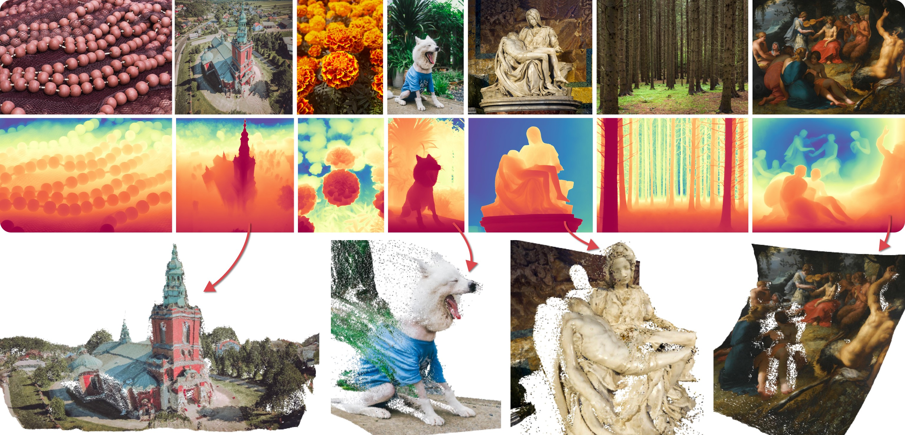

1. Introduction
The success of 2D diffusion models has inspired researchers to explore the diffusion process of geometric information, such as depth and normal maps. This approach leverages the robust performance of diffusion models in generating detailed and coherent visual outputs.
Notable examples of such endeavors include:
- Marigold: Repurposing Diffusion-Based Image Generators for Monocular Depth Estimation
- GeoWizard: Unleashing the Diffusion Priors for 3D Geometry Estimation from a Single Image
While these methods produce promising results, it remains unclear how accurately they predict geometric depth information. For instance, as depicted in the Marigold example below, the results may appear visually plausible, yet their geometric precision warrants further scrutiny.
Figure credit: Depth estimation result from Marigold
In this article, we employ DepthMap to generate point clouds and meshes, aiming to qualitatively evaluate the performance of state-of-the-art depth estimation models, such as Marigold.
2. Generating 3D Vertices and Faces from Depth Maps
Our initial step involves using the Marigold model as a baseline for depth estimation. Despite its relatively lightweight architecture, Marigold is known for its high performance and ease of use, with a publicly available demo on Hugging Face.
The Marigold model produces three primary outputs:
- A depth map in fp32 format as a NumPy array.
- A 16-bit grayscale depth map image.
- A colored depth map image.
In this article, we focus exclusively on the first output, the depthmap_fp32 NumPy array, to avoid distortions that may arise from image encoding or colorization in the second and third outputs. However, if only the depth map image is available, it can be converted into a NumPy array using tools like OpenCV, and processed using the same pipeline.
Given an input image of size $(H, W)$, the depth values in depthmap.npy correspond directly to each pixel in the image. To construct a 3D representation, the depth values are mapped to the z-axis. This mapping could be implemented as follows (in Python):
def map_depth_map_to_point_clouds(depth_map, step_size=1):
H, W = depth_map.shape[:2]
yy, xx = np.meshgrid(range(W), range(H))
vertices = np.zeros((H, W, 3))
vertices[..., 1] = xx * step_size
vertices[..., 0] = yy * step_size
vertices[..., 2] = depth_map
return vertices
While this simple function suffices for generating textured point clouds, constructing meshes requires not only the definition of vertices but also the face information that describes the surface connectivity between vertices. The absence of face data necessitates the creation of a function to define a face for each pixel, subsequently forming quad faces.
def construct_facets_from(mask):
idx = np.zeros_like(mask, dtype=int)
idx[mask] = np.arange(np.sum(mask))
facet_move_top_mask = move_top(mask)
facet_move_left_mask = move_left(mask)
facet_move_top_left_mask = move_top_left(mask)
facet_top_left_mask = np.logical_and.reduce((facet_move_top_mask, facet_move_left_mask, facet_move_top_left_mask, mask))
facet_top_right_mask = move_right(facet_top_left_mask)
facet_bottom_left_mask = move_bottom(facet_top_left_mask)
facet_bottom_right_mask = move_bottom_right(facet_top_left_mask)
return np.stack((4 * np.ones(np.sum(facet_top_left_mask)),
idx[facet_top_left_mask],
idx[facet_bottom_left_mask],
idx[facet_bottom_right_mask],
idx[facet_top_right_mask]), axis=-1).astype(int)
In this context, functions like move_left or move_top_right shift the image by one pixel in each direction, filling the opposite sides with zeros. For example, these functions can be defined as follows:
def move_left(mask):
return np.pad(mask,((0,0),(0,1)),'constant',constant_values=0)[:, 1:]
def move_top_right(mask):
return np.pad(mask,((0,1),(1,0)),'constant',constant_values=0)[1:, :-1]
Subsequently, we can write the final mesh generation function as follows:
def get_mesh_from_depth(outname, scale=None):
depth_map = np.load(f'./depth_to_textured_mesh/{outname}_depth_fp32.npy')
if scale is None:
scale = np.sqrt(depth_map.shape[0] * depth_map.shape[1])
vertices = map_depth_map_to_point_clouds((1-depth_map) * scale)
facets = construct_facets_from(np.ones(depth_map.shape).astype(bool))
faces = []
with tqdm(facets) as pbar:
pbar.set_description(f'[Info] Constructing triangular faces')
for face in pbar:
_, v1, v2, v3, v4 = face
faces.append([3, v1, v2, v3])
faces.append([3, v1, v3, v4])
faces = np.array(faces)
return vertices, faces
Here, the 'scale' parameter is crucial, as it is multiplied by the depth value. Since the depth map array typically ranges from 0 to 1, scaling by the image dimensions usually yields satisfactory results. However, depending on the specific image size, this scaling may need adjustment.
Another key consideration is the subdivision of faces into triangular components. Libraries such as Open3D or Trimesh may encounter errors when loading meshes defined as quad faces. Therefore, splitting quad faces into triangular faces is necessary. This process is computationally expensive for high-resolution inputs, as it is currently executed in a non-parallelized manner using a for loop.
3. Texturing the Mesh from Depth Maps
Texturing is a critical aspect of 3D asset creation. For the task at hand, using the image pixel colors as vertex colors is effective, given that the number of vertices corresponds to the image size.
By loading the input image with a library such as Open3D and assigning its colors to the vertices, a textured mesh can be constructed from the depth map. Moreover, Open3D's built-in functions, such as mesh decimation and Laplacian smoothing, can be applied without custom mesh simplification.
def make_textured_mesh(outname, scale=None):
textures = cv2.imread(f'./depth_to_textured_mesh/{outname}.jpeg')
textures = cv2.cvtColor(textures, cv2.COLOR_BGR2RGB)
textures = textures / 255
vertices, faces = get_mesh_from_depth(outname, scale)
mesh = o3d.geometry.TriangleMesh()
mesh.vertices = o3d.utility.Vector3dVector(vertices.reshape(-1, 3))
mesh.triangles = o3d.utility.Vector3iVector(faces[:, 1:])
mesh.vertex_colors = o3d.utility.Vector3dVector(textures.reshape(-1, 3))
o3d.io.write_triangle_mesh(f'./depth_to_textured_mesh/test/{outname}_textured_mesh.ply', mesh)
return mesh
The current implementation successfully generates meshes of a manageable size for HD and FHD images. However, for 4K images, the excessive number of vertices and faces may hinder visualization in tools like MeshLab. In such cases, reducing the number of mesh vertices through the aforementioned simplifications is advisable. Additionally, applying Laplacian smoothing beyond three iterations is discouraged, as it significantly increases the number of faces, particularly with FHD inputs.
4. Results & Analysis
We generated textured meshes using four images from the Marigold Demo. The results are shown below:
| Scene #1 |  |
|---|---|
| Scene #2 |  |
| Scene #3 |  |
| Scene #4 |  |
The reconstructions are generally feasible, especially for close-up portraits, where the method allows for limited-angle novel view synthesis at a 2.5D level. However, examining the results from different angles reveals a relatively flat depth estimation across similar semantic regions.
This observation suggests that the pre-trained diffusion model may treat depth estimation akin to a semantic segmentation. For instance, certain images, such as the butterfly in the Marigold demo, exhibit notably flat results when converted to meshes.

Left: front view / Right: side view of the mesh
Zooming in on the front view reveals that the stripes on the torso were incorrectly inferred as part of the background. The extreme discontinuities in the depth map exacerbate the difficulty of accurate estimation in such cases.
Closing
In this study, we explored the process of generating textured meshes from depth maps to qualitatively assess the depth estimation quality of diffusion-based models and other generative techniques.
While certain results indicate that depth estimation can be reasonably accurate in 3D, the task often resembles semantic segmentation. Future research could address this limitation by incorporating stereo vision techniques.
For example, DSINE, a model compared to Marigold, utilizes a geometry-aware method inspired by stereo vision, albeit with a lighter network and slightly lower performance. We hypothesize that diffusion-based depth estimation could achieve improved accuracy if regularization terms are designed with stereo vision principles in mind.
You may like also,